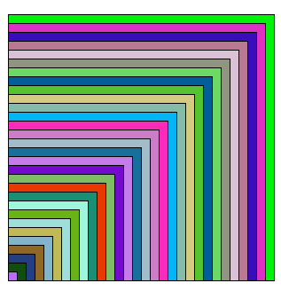
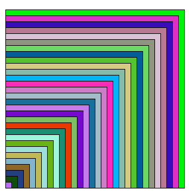
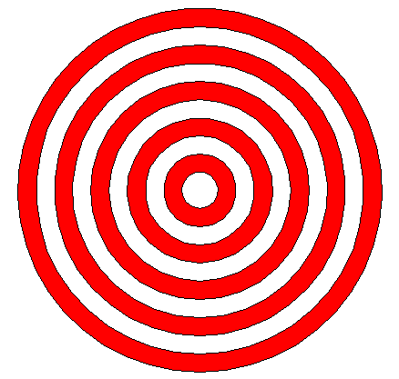
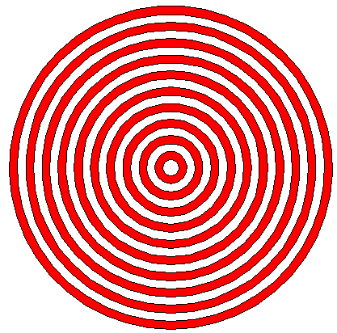
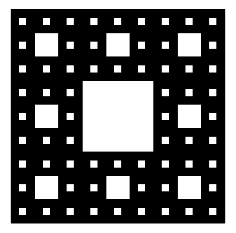
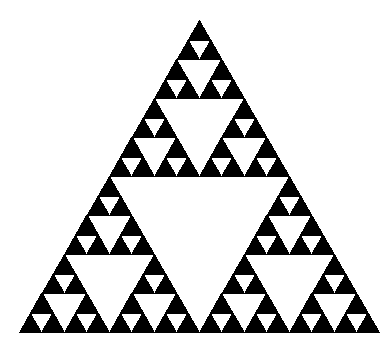

Exercices d’approfondissement#
Exercice 1#
Écrire un code en Python pour réaliser avec le module turtle la figure suivante:
 

{kind=link}
Contraintes à respecter
Définir une variable
npour le nombre de carrésÉcrire une fonction
carréayant pour paramètrecotepour la mesure du coté du carré etcouleurpour la couleur de remplissage du carré.Écrire une boucle
forqui construit les différents carrés de couleurs.
Astuce
On définit les couleurs par un tuple de trois valeurs choisies au hasard. Pour cela, il faut :
importer la fonction
randintdu modulerandomdéfinir la variable
couleurparcouleur=(randint(0,255),randint(0,255),randint(0,255))
Exercice 2#
Écrire un code en Python pour réaliser avec le module turtle la figure suivante:
 {kind=link}
{kind=link}
** Contraintes à respecter**
Il y a autant de disque blanc que de disque rouge
Définir une variable
ncorrespondant au nombre de disque rouge ou blancDéfinir une varaible
rayonpour les rayons des disquesÉcrire une fonction
deplacerqui positionne la tortue au bon endroit pour tracer un cercleÉcrire une fonction
cerclequi trace un cercle de couleur pour un rayon et une couleur passés en argumentsLe plus grand disque a un rayon de 200 et une couleur rouge
L’écart entre chaque disque est le même et dépend du nombre de disques
La figure doit rester correcte si on change la dimension du rayon du grand disque
Exercice 3#
Le tapis de Sierpinski est réalisé à partir d’un motif répété plusieurs fois en modifiant sa taille. On en donne une illustration dans le cas du carré.
{kind=link}
Écrire un code en Python pour réaliser avec le module turtle le tapis de Sierpinski.
Astuce
Le motif initial est un grand carré noir percé en son milieu d’un carré blanc dont la mesure du côté est le tiers de la mesure du côté du grand carré noir.
Ici le tapis est de taille
n=3.
Exercice 4#
Le tapis de Sierpinski suivant est réalisé à partir d’un motif triangulaire répété plusieurs fois en modifiant sa taille.
{kind=link}
Écrire un code en Python pour réaliser avec le module turtle le tapis de Sierpinski.